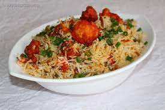

Gobi Fried Rice

Description
Gobi Fried Rice is a simple but indulgent Indo-Chinese style fried rice recipe prepared with mixed vegetables, cooked rice and crispy fried gobi/cauliflower. It is also known as Gobi Manchurian fried rice and is one of the most popular fusion recipes in many restaurants.
- Gobi
- Tomato
- Onion
- Spicies
- Coriandor Leaves
- Cooked Rice
- First fry sliced tomatos and Onions on a pan
\
- Then add gobi to it
- Add cooked rice and spices with gobi pieces , to it
- Cook well and your gobi fried rice is ready